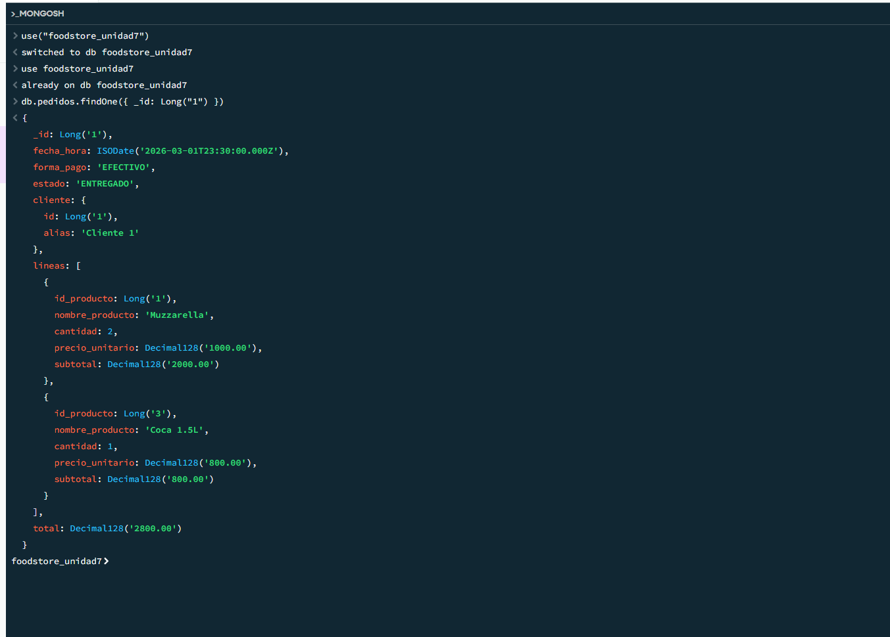
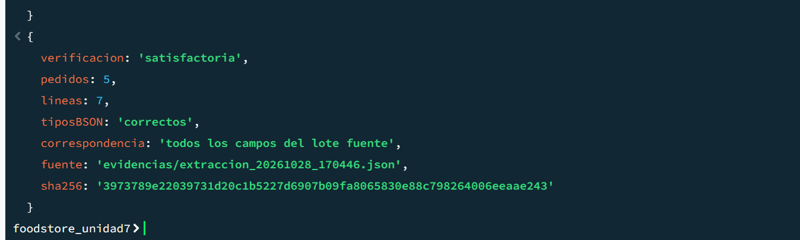
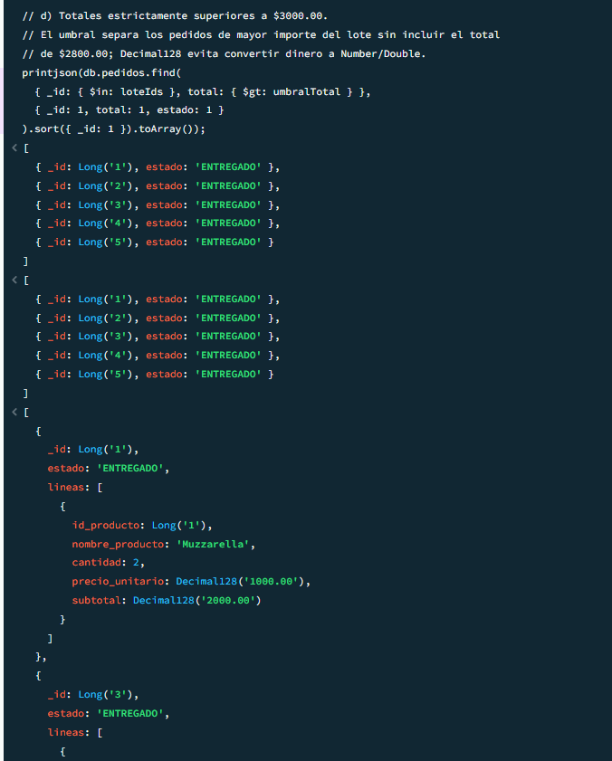
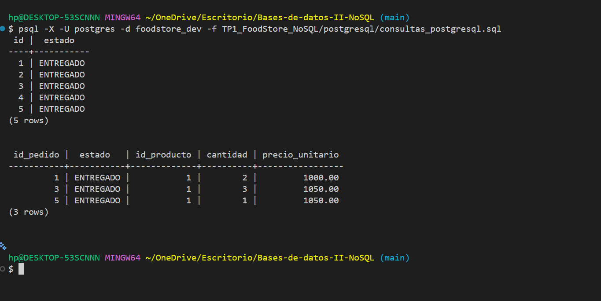
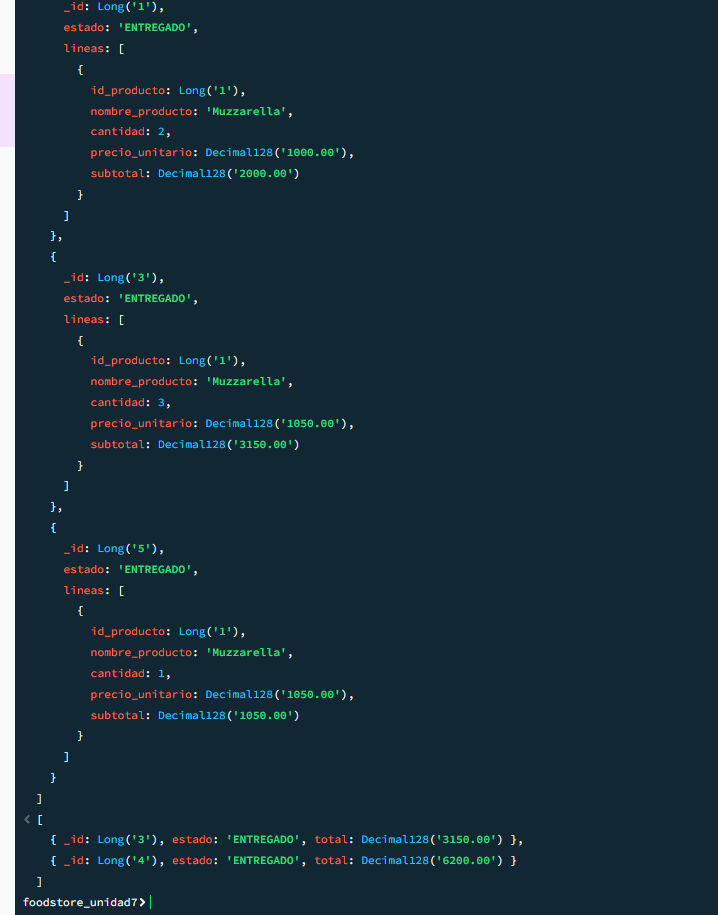

Universidad Tecnológica Nacional — Facultad Regional Mendoza · Tecnicatura Universitaria en Programación
Bases de Datos II · Comisión 4 · Profesor: Neira Sergio
Trabajo práctico Unidad 7 — NoSQL y nuevas formas de almacenamiento | Food Store
Versión borrador para revisión del equipo: pendiente del OK de Mateo y Lucas.
Se migró el subconjunto «pedidos y detalle de pedidos» de la base PostgreSQL foodstore_dev (esquema public), pedidos 1 a 5, a la colección foodstore_unidad7.pedidos, con un documento por pedido.
| Tabla | Claves |
|---|---|
pedido | PK id; FK id_cliente → cliente.id |
detalle_pedido | PK (id_pedido, id_producto); FK a pedido.id y producto.id |
cliente | PK id |
producto | PK id; FK id_categoria (fuera del subconjunto) |
Esquema de la colección (notación descriptiva):
pedidos {
_id: Long, // = pedido.id
fecha_hora: Date, // instante UTC
forma_pago: String, estado: String,
cliente: { id: Long, alias: String },
lineas: [ { id_producto: Long,
nombre_producto: String,
cantidad: Int32,
precio_unitario: Decimal128,
subtotal: Decimal128 } ],
total: Decimal128
}
Embebidos: el objeto cliente (mínimo) y el arreglo lineas. IDs conservados: el del pedido como _id, el del cliente y los de producto, todos como BSON Long. El cliente lleva su ID y un alias sintético Cliente <id>, sin nombres ni contactos reales; se excluyeron las observaciones. El precio proviene de detalle_pedido.precio_unitario (histórico); el nombre del producto es el actual.

foodstore_unidad7.pedidos (Compass): _id Long, fecha Date, cliente con alias, dos líneas con Decimal128 y total 2800.00.Método. Amanda ejecutó el 28/10/2026 postgresql/extraccion_pedidos.sql en una transacción REPEATABLE READ, READ ONLY, que exporta a JSON los pedidos 1–5 con sus líneas y controles (referencias, duplicados, fórmulas). Luego ejecutó mongodb/migracion_pedidos.js en la shell de Compass: el script comprueba el SHA-256 del archivo, convierte a tipos BSON sin pérdida (IDs Long, cantidades Int32, fechas Date, importes Decimal128 desde texto), verifica que ningún ID exista en el destino, inserta con insertMany ordenado y luego verifica tipos con $type y cada campo contra el lote fuente. No borra, reemplaza ni reintenta.
Fuente oficial: evidencias/extraccion_20261028_170446.json, SHA-256 3973789e22039731d20c1b5227d6907b09fa8065830e88c798264006eeaae243. Resultado: 5 pedidos y 7 líneas insertados, tipos BSON correctos y correspondencia con todos los campos del lote.

Reglas de integridad conservadas (controladas al extraer y antes de insertar):
CHECK de detalle_pedido).subtotal = cantidad × precio_unitario histórico y total = suma de subtotales, calculados con aritmética decimal exacta.Por qué se embebe. El acceso frecuente es al pedido completo; las líneas solo existen dentro de su pedido (composición) y se leen siempre juntas, por lo que un documento evita uniones y queda atómico al escribirse. Del cliente se embebe una referencia mínima (ID y alias) para identificarlo sin duplicar datos personales. Productos, clientes y categorías completos quedan como entidades propias. El costo es duplicar el nombre del producto entre pedidos y almacenar valores derivados (subtotal, total), que deben mantenerse coherentes. No se instalaron validadores permanentes en la colección.
Parámetros. Todas las consultas se limitan al lote 1–5. Estado: ENTREGADO (presente en los cinco pedidos). Producto: ID 1 (en los pedidos 1, 3 y 5). Umbral de d): total > Decimal128("3000.00").
MongoDB (consultas_mongodb.js):
find del lote, proyectando _id y estado.find con estado: "ENTREGADO".aggregate: $match sobre lineas.id_producto: Long(1) y $filter para mostrar solo la línea coincidente.find con total: { $gt: Decimal128("3000.00") }, sin convertir dinero a Double.PostgreSQL (consultas_postgresql.sql): b) pedido filtrado por estado; c) pedido unido a detalle_pedido con id_producto = 1, mostrando cantidad y precio.

ENTREGADO.| Consulta | Cantidad en PostgreSQL | Cantidad en MongoDB | Coinciden los IDs | IDs recuperados |
|---|---|---|---|---|
Estado seleccionado: ENTREGADO | 5 | 5 | Sí | 1, 2, 3, 4, 5 |
Producto seleccionado: ID 1 | 3 | 3 | Sí | 1, 3, 5 |
En c), ambos motores devuelven las mismas líneas con cantidad y precio histórico: pedido 1 (2 × 1000.00), pedido 3 (3 × 1050.00) y pedido 5 (1 × 1050.00). No hubo diferencias que corregir.
Resultado de d). Pedidos 3 (total 3150.00) y 4 (total 6200.00). Justificación del umbral: el lote suma 14700.00 en cinco pedidos (2800.00, 1500.00, 3150.00, 6200.00 y 1050.00), con un promedio de 2940.00; el umbral de 3000.00 selecciona los pedidos por encima del promedio y excluye el de 2800.00, cercano a él.

psql -X -U postgres -d foodstore_dev -f …/consultas_postgresql.sql): b) 5 filas, pedidos 1–5; c) 3 filas, pedidos 1, 3 y 5 con producto 1.Mateo ejecutó las consultas el 29/10/2026 en su computadora; su captura de MongoDB no mostraba completas c) y d). Amanda reejecutó los mismos scripts sin modificarlos el 1/11/2026 (figuras 3 a 5) y obtuvo los mismos resultados. La comparación vale para los cinco pedidos migrados; no demuestra sincronización futura entre motores.

Consulta. El 29/10/2026 Lucas consultó a Gemini (modelo informado como Flash-Lite) en un chat nuevo. La pregunta describió el modelo relacional real (pedido, detalle_pedido con clave compuesta y precio unitario histórico, cliente, producto), la colección documental con cliente y líneas embebidos y total Decimal128, el acceso frecuente a pedidos completos y la necesidad de conservar la coherencia de cantidades y precios. La IA recomendó mantener PostgreSQL. Se contrastaron dos afirmaciones:
| Afirmación de la IA | Fuente o prueba | Resultado |
|---|---|---|
1. En MongoDB la coherencia entre subtotal, cantidad, precio y total debe imponerla la aplicación o $jsonSchema, porque no valida dependencias cruzadas entre campos. |
MongoDB Manual, Specify Validation With Query Operators (consultado el 29/10/2026). Prueba de Lucas en MongoDB 9.0.4, en una colección de ensayo con documentos sintéticos y un validador $expr: aceptó el pedido coherente y rechazó el de total incorrecto y el de subtotal incorrecto. Salida: RECHAZADO (codigo 121 …): Document failed validation. |
Imprecisa. MongoDB valida entre campos con $expr, pero la regla debe definirse y mantenerse. |
| 2. Las claves foráneas de PostgreSQL garantizan que un pedido no apunte a un cliente o producto inexistente. | Prueba de Lucas en PostgreSQL 17.11 sobre una copia restaurada, con transacciones terminadas en ROLLBACK. Salida: viola la llave foránea «fk_pedido_cliente»; también fk_detalle_pedido_producto. |
Confirmada. Además se rechazaron cantidad = 0 (CHECK) y la escritura manual del subtotal (columna generada); pedido no almacena total. |
Límites: documentos sintéticos, una sola ejecución por motor y solo inserciones; el validador no está instalado en foodstore_unidad7; no se midió rendimiento.
Conviene mantener PostgreSQL como base principal de pedidos, sin reemplazarlo por MongoDB para este subconjunto. Primer criterio, integridad y coherencia: en PostgreSQL el motor rechazó un pedido con cliente inexistente, una cantidad igual a cero y la escritura manual de un subtotal, que es una columna generada; además no almacena el total, por lo que no puede quedar desactualizado. MongoDB también puede validar reglas entre campos con $expr, como se comprobó en el laboratorio, pero esa regla debe definirse y mantenerse, y el modelo documental almacena total y subtotales derivados. Segundo criterio, atomicidad: MongoDB garantiza atomicidad por documento, y un pedido embebido es un solo documento; las operaciones que involucran varios documentos, como actualizar stock y pedido, requieren transacciones distribuidas, que la documentación oficial describe con mayor costo de rendimiento que una escritura de un solo documento. Con cinco pedidos no se midió rendimiento, por lo que la ventaja de leer un pedido completo en una sola lectura no está probada aquí. Si en el futuro esa lectura fuera un cuello de botella, convendría combinar: PostgreSQL como fuente de verdad y MongoDB solo como copia de lectura derivada.
mongodb/consultas_mongodb.js y postgresql/consultas_postgresql.sql.TP1_FoodStore_NoSQL/evidencias/): captura de inserción (migracion_insercion.png), capturas de Mateo del 29/10 (consultas_mongodb_consignas_4_5.png, consultas_postgresql_consignas_4_5.png, migracion_verificacion_mateo_20261029.png), captura de los parámetros ejecutados (consultas_mongodb_amanda_1.png) y salidas completas de Lucas (prueba_validacion_expr_salida.txt, contraste_integridad_postgresql_salida.txt).